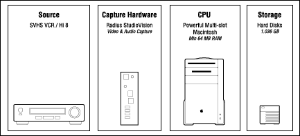
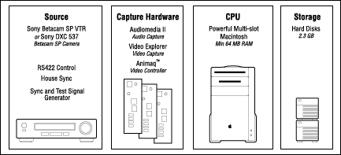
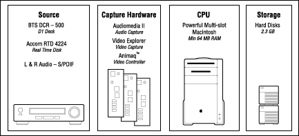

Hardware options
Necessary hardware includes a controllable source player-with audio
capture capabilities-and a high-quality RGB monitor. This section presents
a low-end, mid-range, and high-end solution, with an overview illustration
for each.
Low-end ($7K
- Hi8 player, (controllable via RS422 or RS 232)
- Highest-quality video output: S-Video
-
- S-Video to RGB transcoder (Truvision, VIDI/O)
- High-quality RGB monitor (for example, Sony BVW)

Figure 1: Components of a low-end video-processing lab.
Note: Composite video causes some edge deterioration, but is often
acceptable.
Mid-range ($20K
- Video: Betacam SP deck, for example, Sony PVW 2800
(controllable via RS422 or RS 232)
- LaserDisc: Pioneer VDR-1 V1000
- Highest-quality video output: RGB, Component Betacam (YPrPb)
-
- YPrPb to RGB transcoder, SVS Delta BC
- High-quality RGB monitor (for example, Sony PVM monitor)
- Audio mixer (for example, Macky)
Note: Mid-range equipment should produce materials that are
adequate for the 3DO Interactive Multiplayer (tm).

Figure 2: Components of a mid-range video processing lab.
High-end
- D1 deck, for example, BTS DCR-500 or Sony DVR 2000
- Real-time disk, for example, ACCOM RTD 4224 or Abekas A66
- Highest-quality video output: D1 deck
- High-quality RGB monitor (for example, Sony BVW)

Figure 3: Components of a high-end video-processing lab.